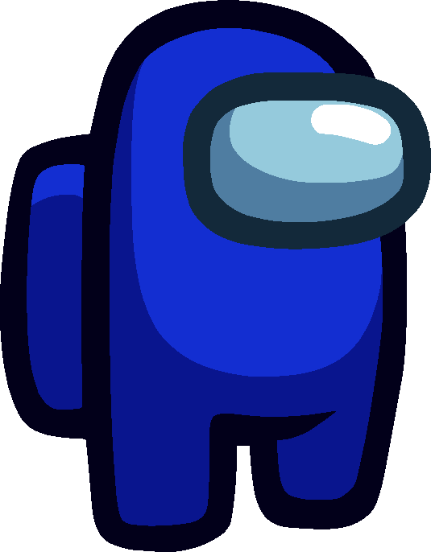
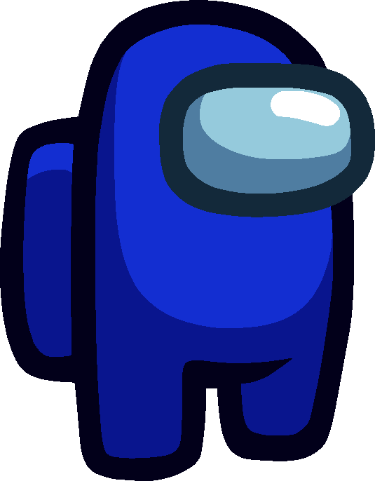

Poznaj grafikę 3D z zespołem
Donajsky


 Zaczynajmy!
Zaczynajmy!
Zaczynajmy!
Zaczynajmy!
Filament tworzywem termoplastycznym, którego używa się najczęściej w procesie wykonywania druku przestrzennego za pomocą metody osadzania topionego materiału. W tym sposobie nanoszony materiał, który jest zwykłym tworzywem sztucznym, przeciska się przez specjalną dyszę dodatkowo ogrzaną do temperatury ułatwiającej jego topnienie(173°C oraz temperatura zeszklenia 60°C) Wyróżniamy kilka rodzajów filametów: PLA, ABS, TPU, PETG, HIPS-X, ASA - każde ma inne właściwości i znajduje inne zastosowanie.
Ekstruder jest nazywany sercem drukarki - jest mechanizmem, który przekazuje plastik ze szpuli do gorącej części mechanizmu grzejnego, zwanego hotendem. Wyróżniamy 3 najpopularniejsze
typy ekstruderów wykorzystywanych w drukarkach 3D:
Ekstruder Standardowy - najczęściej stosowany jako fabryczny element w prostszych konstrukcyjnie drukarkach. Stosunkowo mało dokładny, niezdolny do uzyskiwania wysokich prędkości wytłaczania ze względu na niską ilość kroków, posiadający mały moment obrotowy przepychanego filamentu
Ekstruder z zębatką - Stosowany w wielu rozwiązaniach, takich jak E3D Titan i jego pochodnych. Dzięki zastosowaniu przełożenia, możliwe jest zwiększenie momentu obrotowego, generowanego przez układ, dzięki czemu filament może zostać przepchnięty przez ekstruder w sposób bardziej stabilny oraz zmniejsza się ryzyko jego zablokowania w głowicy. Ekstruder w tej konfiguracji wykonuje około 400 kroków na każdy milimetr przepchniętego filamentu.
Ekstruder z podwójnym zazębieniem filamentu - Jest to chyba najdoskonalszy dostępny sposób przetłaczania plastiku do druku 3D.Dzięki temu filament jest przepychany równocześnie z obu stron, efektywnie zwiększając dwukrotnie siłę ekstrudera, pozwalając na uzyskanie jeszcze lepszych efektów. Extruder z podwójnym zazębieniem jest wykorzystywany w wielu drukarkach, na przykład w Prusa i3 MK3. Podobnie jak w wersji z jedną zębatką w tej konfiguracji wykonuje około 400 kroków na każdy milimetr przepchniętego filamentu

 



Sebastian Kocik - html i css
hobby: granie w cringe gry typu liga legend
Jakub Felczak - animacje javascript
hobby: jedzenie
Grafiki z drukarek 3D 3DNatives
Pozostałe grafiki użyte na stronie freepik.com